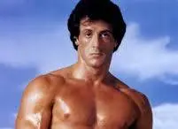

Rocky is a 1976 American independent[3] sports drama film directed by John G. Avildsen, written by and starring Sylvester Stallone. It is the first installment in the Rocky franchise and also stars Talia Shire, Burt Young, Carl Weathers, and Burgess Meredith. In the film, Rocky Balboa (Stallone), a poor small-time club fighter and loanshark debt collector from Philadelphia, gets an unlikely once in a lifetime shot at the world heavyweight championship held by Apollo Creed
